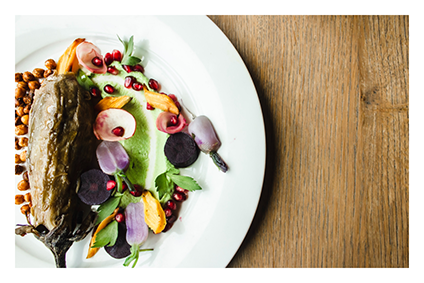
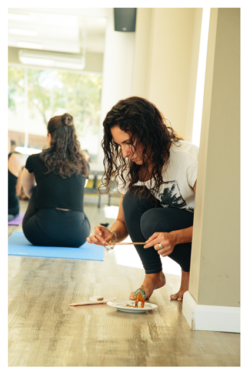

Georgina Zino
Soy licenciada en nutrición con posgrado en Medicina Ayurveda y en alimentación basada en plantas. Estudié nutrición en la universidad del Litoral y años después, viajando por el mundo, encontré mi pasión, el Ayurveda. Fué así que cuando regresé a Argentina me fui a vivir a Buenos Aires, donde hice el posgrado de Medicina Ayurveda para Profesionales de la salud en la Fundación de salud Ayurveda Prema y me especialice en alimentación vegetariana y vegana en AADYND

Mamá Pacha surge luego de haber sido mamá de mi primer hijo, en 2019, y de haber vuelto a vivir en mi ciudad natal, Paraná (Entre Ríos) en 2020. A través de Mamá Pacha busco integrar la sabiduría del Ayurveda, complementada con mis conocimientos en nutrición y alimentación basada en plantas; junto con la maternidad, que me regaló un nuevo enfoque de la vida, y a todas las experiencias de aprendizaje que obtuve a partir diferentes herramientas como el chamanismo, el reiki, las constelaciones familiares, el tarot; que me ayudaron a expandir y a entender que somos más que un cuerpo físico, y que el abordaje de la salud debe ser considerado de forma integral.
Planes de Alimentación
Planes de alimentacion especialmente diseñados para cubrir todas tus requerimientos de energia, vitaminas y minerales.
"Lo que es bueno para uno, no es bueno para todos"
Mi Pasión
El Ayurveda cambió mi vida, y por eso mi objetivo es llegar a más personas para que puedan econtrarse consigo mismas y restablecer su equilibrio.
Planes de Equilibrio

Para poder alcanzar un estado de equilibrio, necesitamos alimentarnos de acuerdo a nuestro Dosha.
"QUE TU ALIMENTO SEA TU MEDICINA Y TU MEDICINA SEA TU ALIMENTO"
Hipócrates
¿Qué es el Ayurveda?
El Ayurveda es un sistema médico milenario proveniente de India, también llamada “Ciencia de la vida larga y plena”, que entiende que como seres humanos, somos parte de la naturaleza, estamos regidos por sus ciclos y compuestos por los 5 elementos en nuestro interior (espacio, aire, fuego, agua y tierra).

Doshas
De la combinación de estos cinco elementos, se originan tres constituciones básicas, también llamados Doshas: Vata (espacio + aire), Pitta (fuego + agua) y Kapha (agua + tierra). El abordaje según los Doshas, permite individualizar las tendencias metabólicas de cada persona y aproximarse con bastante acierto a la selección adecuada de alimentos para cada una, colaborando con una digestión más rápida y completa.
Sabores
La clasificación de los 6 sabores y su efecto sobre el organismo; así como la utilización de especias, no sólo para aportar exquisitos aromas y sabores exóticos a las preparaciones, sino también ejerciendo una función específica sobre la digestibilidad de los diferentes nutrientes. La sincronización de la alimentación con los ritmos de la naturaleza, es decir, con las distintas etapas de la vida, las estaciones del año y las horas del día.

Beneficios
- Considera que cada individuo es único.
- Pone el foco en el auto-conocimiento y la auto-observación, y en el equilibrio cuerpo, mente y espíritu.
- Promueve la prevención de la enfermedad, y en caso de que ésta ya esté presente, trabaja sobre el síntoma, para reducirlo o eliminarlo.
- El alimento es medicamento, y no sólo nos alimentamos a través de lo que comemos, sino de todo lo que experimentamos en nuestra vida diaria.
- No sólo somos un cuerpo físico, sino también un cuerpo espiritual, y ambos necesitan estar en equilibrio para alcanzar el bienestar y prevenir la aparición de enfermedades.
Artículo
Pueden encontrar un ejemplo en un artículo de la revista argentina Para Ti, en la cual tuve la oportunidad de participar y presentarles como hacer un Ghee casero.

“EL CUERPO ES EL RESULTADO DE LA COMIDA. LAS ENFERMEDADES OCURREN COMO RESULTADO DE UNA NUTRICION EQUIVOCADA”
Charaka Samhita
¿EN QUE CONSISTE UNA CONSULTA DE NUTRICION AYURVEDA?
En una consulta ayurvédica haremos una entrevista inicial para conocer la constitución doshica de la persona y el posible equilibrio que pueda existir en el momento. Indagaremos en aspectos personales y familiares, no sólo físicos, sino también emocionales. Hablaremos sobre hábitos y gustos alimentarios, y sobre los objetivos y expectativas que tiene el paciente con la consulta.
A partir de la información recabada se armará un plan alimentario de equilibrio personalizado, con recetas ayurvédicas para poner en práctica y una rutina de equilibrio, que colaborará a alcanzar el equilibrio físico, mental y espiritual.
Terapias Grupales
Acompañamiento en la transición hacia una alimentación basada en plantas
Se trata de 8 encuentros, con modalidad online o presencial, en grupos pequeños (máximo 5 participantes), donde se abordará la alimentación basada en plantas desde sus distintos componentes; consiste en clases teóricas y prácticas, cuyo objetivo será que los participantes puedan conocer cómo llevar una alimentación basada en plantas nutricionalmente completa. Se compartirá material escrito y recetas, para que puedan poner en práctica.
Acompañamiento ayurvédico en el embarazo
Se trata de 8 encuentros semanales, de una hora, con modalidad online o presencial, en grupos pequeños (máximo 5 participantes), donde trabajaremos técnicas para aumentar el nivel de consciencia en la vida cotidiana y estimular la conexión con la panza, entendiendo que el bebé se nutre de todas las experiencias que vive, desde su concepción hasta el momento en el que llega a este mundo. Trabajaremos con meditaciones y técnicas de armonización. Se compartirá material escrito y se ofrecerán actividades semanales para estimular el trabajo consciente en casa.